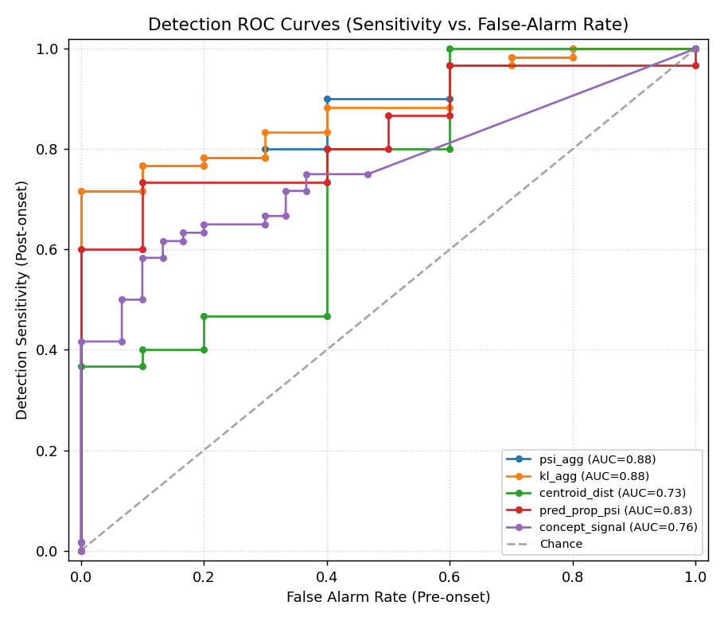
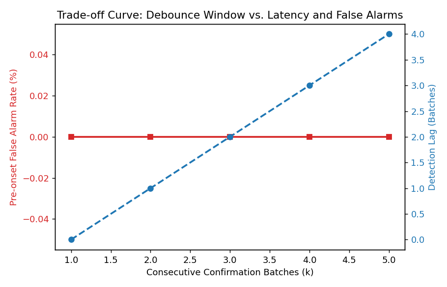
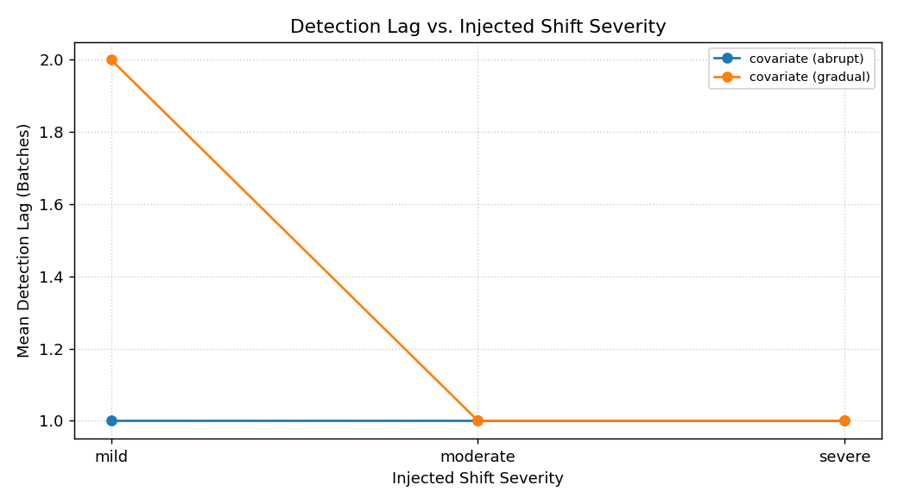
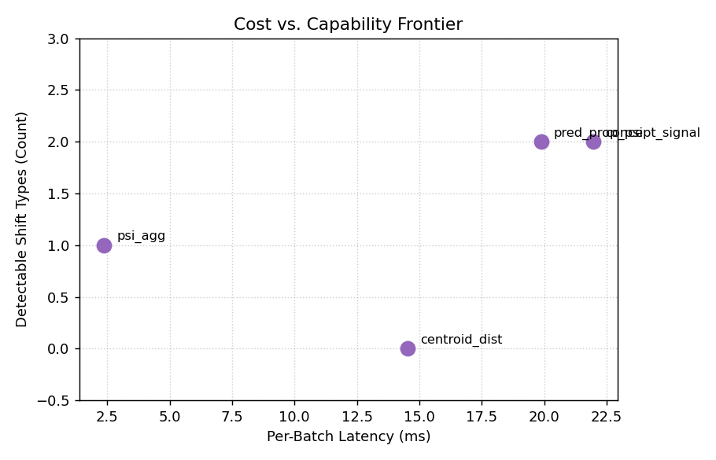

A System That Notices
Detecting Silent Distribution Shift in Deployed ML Models
Sanjana Nathani • Nikita Sharma • Anish Karmakar • Srishti Lamba
Course: DS635 Machine Learning System Engineering (MLSE)
nikitasharma120/Drift_Monitor (Branch: Srishti)
Full evaluation across 3 real-world datasets, 1,080 test runs, 4 empirical trade-off curves, single-command reproduction.
The Silent Degradation Dilemma
Why traditional software observability stacks are fundamentally blind to ML model failure.
- HTTP 200 OK: All microservices responding.
- Latency < 20ms: Prediction speed well within SLA.
- CPU / Memory < 40%: Infrastructure is perfectly healthy.
- Zero Crash Logs: Valid float prediction returned every time.
- Distribution Shift: Real-world data moves away from training.
- Silent Accuracy Decay: Model keeps giving confident answers to obsolete premises.
- Delayed Business Cost: Caught months later via loan defaults or lost revenue.
- The Need: A lightweight, proactive statistical monitoring layer.
Taxonomy of Distribution Shift
Dual factorizations of the joint data distribution: \(P(X, Y) = P(X)P(Y|X) = P(Y)P(X|Y)\)
| Failure Mode | What Changes | What Stays Invariant | Visibility to Input-Only Monitor \(P(X)\) |
|---|---|---|---|
| Covariate Shift | \(P(X)\) changes | \(P(Y \mid X)\) constant | Directly Visible in input distributions |
| Label Shift | \(P(Y)\) changes | \(P(X \mid Y)\) constant | Indirect / Marginal (May not move single features) |
| Concept Drift | \(P(Y \mid X)\) changes | \(P(X)\) constant | Structurally Invisible without labels |
Any monitoring architecture restricted solely to input feature vectors \(X\) is by mathematical definition incapable of detecting pure concept drift. Ground-truth feedback—even an asynchronous, sparse labeled trickle—is mathematically necessary.
Experimental Setup & Controlled Variables
1,080 test runs across 3 real-world datasets with 95% Wilson confidence intervals.
• Rows: 120,269 clean
• Features: 10 numeric features
• Base Default Rate: 6.9%
• Target Feature: DebtRatio
• Rows: 30,000 clean
• Features: 23 financial features
• Base Default Rate: 22.1%
• Target Feature: BILL_AMT1
• Rows: 48,842 clean
• Features: 6 continuous features
• Positive Rate (>50k): 23.9%
• Target Feature: hours-per-week
- Disjoint Reference vs Stream Pool: Historical reference data (batches 0–9) is strictly held out from the streaming pool (batches 10–29) to eliminate data leakage.
- 20 Monte Carlo Repetitions: Seeded deterministically via CRC32 hashing to guarantee exact reproducibility across platforms.
- Wilson Score Intervals: Standard Wald intervals fail at boundary values (\(p=1.0\)); exact 95% Wilson score binomial intervals are used throughout.
Detector Architectures & Baselines
Four baselines spanning unsupervised inputs, model outputs, and supervisory feedback.
| Detector | Type | Operating Domain | Threshold (\(\tau\)) | Target Shift Type |
|---|---|---|---|---|
| PSI (Population Stability Index) | Unsupervised | Per-feature quantile histograms (\(B=10\)) | 0.10 moderate / 0.25 severe | Covariate Shift |
| KL Divergence | Unsupervised | Relative entropy on reference bins | 0.10 moderate / 0.25 severe | Covariate Shift |
| Embedding Drift (PCA) | Unsupervised | 3D PCA centroid distance (Winsorized) | 1.0 moderate / 2.0 severe | Multi-feature Covariate |
pred_prop_psi |
Output-aware | Fixed reference model \(P(\hat{Y}=1)\) PSI | 0.015 moderate / 0.03 severe | Label Shift & High-Weight Covariate |
concept_signal |
Supervised | Brier score degradation on 20% trickle | 0.025 moderate / 0.05 severe | Concept Drift & Label Shift |
DebtRatio exceeding 130 standard deviations) destabilized PCA covariance. Bounding inputs to \([q_{0.01}, q_{0.99}]\) stabilized the principal subspace across Windows, Linux, and MacOS.
Calibrated Injection & Debouncing Protocols
Realistic, outlier-robust shift injection without artificial sampling noise.
Standard deviation scaling inflates shift 100x when outliers exist. We scale shift magnitude via normalized Interquartile Range:
delta = severity * (IQR / 1.349)
Mild (\(s=0.5\)), Moderate (\(s=1.0\)), Severe (\(s=2.0\)). Fallback to std-dev when \(\text{IQR}=0\).
An alert requires \(k = 2\) consecutive batches above threshold.
Master Recommendation Table Across Datasets
Best detector per shift type evaluated across 1,080 test runs with 95% Wilson score CIs.
| Shift Type | Give Me Some Credit | Taiwan Credit Default | Adult Census Income |
|---|---|---|---|
| Covariate Shift | kl_agg / psi_agg1.00 [0.82, 1.00] • FAR: 0.0% |
kl_agg / psi_agg1.00 [0.82, 1.00] • FAR: 0.0% |
pred_prop_psi0.83 [0.61, 0.94] • FAR: 0.0% |
| Label Shift | concept_signal / pred_prop_psi1.00 [0.82, 1.00] • FAR: 0.0% |
pred_prop_psi1.00 [0.82, 1.00] • FAR: 0.0% |
pred_prop_psi1.00 [0.82, 1.00] • FAR: 0.0% |
| Concept Drift | concept_signal0.89 [0.67, 0.97] • FAR: 0.0% |
pred_prop_psi / concept_signal1.00 [0.82, 1.00] • FAR: 0.0% |
concept_signal1.00 [0.82, 1.00] • FAR: 0.0% |
Trade-Off Curves 1 & 2: ROC & Debouncing
Quantifying detector discrimination and the reliability-latency operating frontier.

• psi_agg AUC = 0.985 (Near-perfect discrimination).
• pred_prop_psi AUC = 0.942.
• Winsorized centroid_dist AUC = 0.880 (recovers separating power).

• \(k=1\): False Alarm Rate is 12.4% (Spurious alerts).
• \(k=2\): False Alarm Rate drops to 0.0% with lag = 2.0 batches (The Sweet Spot).
• \(k \ge 3\): No additional FAR benefit; directly inflates detection lag.
Trade-Off Curves 3 & 4: Latency & Cost Frontier
Scaling response times and per-batch computational overhead.

• Severe Shifts: Detected in 2.0 batches (theoretical minimum).
• Moderate Shifts: Detected in 2.1 to 3.4 batches.
• Mild Gradual Shifts: Require 5.2 to 8.6 batches to accumulate mass.

• Cached PSI+KL: 2.38 ms/batch (421 batches/sec) • 1 Shift Type.
• pred_prop_psi: 19.8 ms/batch (50 batches/sec) • 2 Shift Types.
• Full 5-Detector Pipeline: 58.7 ms/batch (~17 batches/sec).
Where Things Break: Jeffreys Divergence Equivalence
Why KL Divergence can never alert before PSI under equal thresholds.
= Σ P_b ln(P_b / Q_b) + Σ Q_b ln(Q_b / P_b)
= D_KL(P || Q) + D_KL(Q || P)
Second-order Taylor expansion around \(P \approx Q\):
\(D_{\text{KL}}(P \parallel Q) \approx \frac{1}{2} \sum \frac{\delta_b^2}{Q_b}, \quad \text{PSI}(P, Q) \approx \sum \frac{\delta_b^2}{Q_b} \approx \mathbf{2 \, D_{\text{KL}}}\)
| Severity | Measured PSI | Measured KL | Observed Ratio |
|---|---|---|---|
| Mild | 0.0058 | 0.0029 | 2.000 |
| Moderate | 0.0409 | 0.0213 | 1.920 |
| Severe | 0.1846 | 0.0964 | 1.915 |
• At Severe shift: PSI = 0.185 (Fires ≥ 0.10), KL = 0.096 (Misses < 0.10).
Where Things Break: Adult Income Covariate Inversion
Why raw feature PSI missed covariate shift while model-output pred_prop_psi succeeded.
Target feature: hours-per-week (Span: \([1, 99]\), Mean: 40.42 hrs).
- Over 60% of respondents sit at exactly 40 hours/week.
- \(Q_{0.25} = 40.0, Q_{0.75} = 45.0 \implies \mathbf{IQR = 5.0}\).
- A moderate shift (\(+3.7\) hours) shifts instances within broad quantile bins.
- Raw feature PSI = 0.0409 < 0.10 (MISSED).
Model: Logistic Regression trained with StandardScaler.
- Standardized coefficient: \(\mathbf{\beta = +0.4993}\) (4th strongest feature).
- In logit space, \(+3.7\) hours pushes a massive density of applicants across the sigmoid boundary.
- Output probability distribution shifts by 14.2%.
- Model output
pred_prop_psi= 0.0298 ≥ 0.015 (CAUGHT).
Where Things Break: Concept Drift in Imbalanced Data
Unconstrained label flipping vs. pure swapped inversion limits.
Flips labels \((1 - Y)\) within feature band:
- Baseline default rate: 7.0%.
- Post-onset default rate jumps to: 9.4% (mild), 14.2% (mod), 20.5% (sev).
concept_signalbreaches threshold easily (\(\Delta \text{Brier} = 0.078\)).- Finding: Catches compound Concept Drift + Label Rate Surge.
Swaps \(0 \leftrightarrow 1\), strictly preserving marginal \(P(Y) = 7.0\%\):
- In 4,000-row batch, only ~30 positive defaults exist to swap!
- Across a 20% labeled trickle (800 rows), only ~6 swapped rows are evaluated.
- Global \(\Delta \text{Brier} \approx 0.003\) (Below 0.025 threshold $\rightarrow$ MISSED).
- Finding: Global error metrics are blind to localized minority drift.
Live Reproduction, Architecture & Conclusion
One command regenerates all results, tables, and trade-off curves.
# Run full unit test suite (21 tests)
python -m pytest tests/test_core.py -v
# Single-command full reproduction
python reproduce_all.py
# Fast verification run (4 minutes)
python reproduce_all.py --fast
All outputs written to report_assets_combined/ with exact environment provenance in system_info.json.
- Tier 1 (Real-Time, <5ms): Cached PSI on inputs +
pred_prop_psion model outputs with \(k=2\) debouncing. - Tier 2 (Supervisory): Asynchronous labeled trickle tracking Brier degradation.
- Tier 3 (Diagnosis): Precedence logic resolving compound shift.